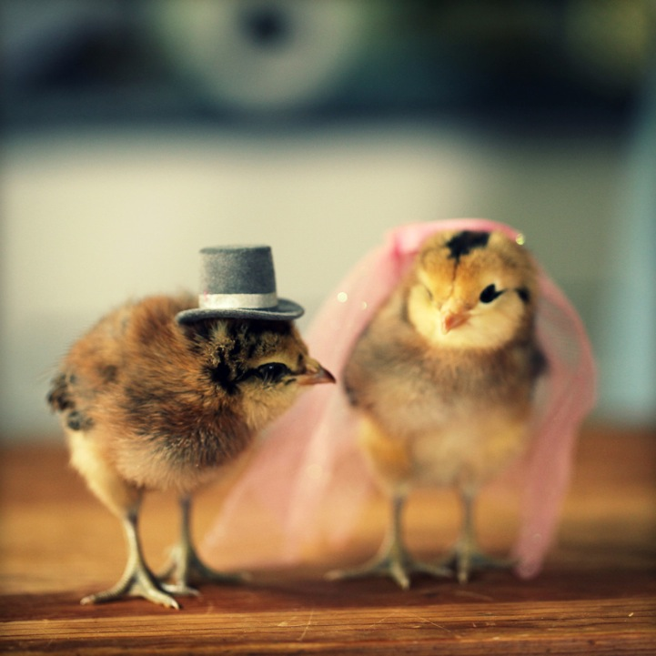

They require little upkeep and are inexpensive to grow. Chickens are far easier to care for than other pets such as dogs and cats in many ways. They do not require grooming or walking (although if you are raising chickens for exhibition purposes, you may have to do some clipping or cleaning every now and then).
They don't even need to be fed twice a day! You may only need to fill hoppers and drinkers once a week if you have auto or gravity-feeders and waterers (or even less). Anyone can keep a flock of chickens in their backyard. In most circumstances, you won't need to pay for veterinarian services, and any costs you do incur can be offset by selling some of your additional eggs.
What do you call a bird who’s too afraid to fly? A chicken!
How does a chicken send mail to her friends? In a hen-velope.
What do chickens grow on? An eggplant.
What do chickens study at college? Egg-onomics.
you hear about the chicken who could lay eggs in the winter? She was no spring chicken.